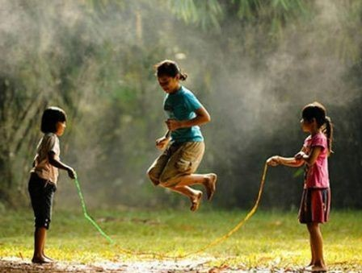

Game

Festival Permainan Tradisional di Hari Jadi Tulungagung
Ratusan pegawai negeri sipil (ASN) di Tulungagung merayakan Hari Jadi ke-818 Tulungagung dengan meriah melalui Festival Permainan Tradisional. Festival yang digelar di lapangan Hutan Kota...